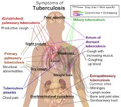

Tuberculosis
Definition
Tuberculosis, or TB, is an infectious bacterial disease caused by Mycobacterium tuberculosis, which most commonly affects the lungs.
It is transmitted from person to person via droplets from the throat and lungs of people with the active respiratory disease
Pulmonary TB, or TB of the lungs, is the most common form of tuberculosis. However,
TB can also affect other parts of the body where the TB germs are carried from the lungs by the bloodstream
Symptoms
- Persistent Cough
- Tiredness or weakness of the whole body
- Loss of weight
- Loss of appetite
- Night Sweats (even in cold weather)
- Pains in the chest
- Breathlessness
- Blood-stained spit or coughing up blood
Prevention
TB is an airborne disease and transmission essentially can be prevented through adequate ventilation and limited contact with patients
Pictures

Treatment
Tuberculosis is treatable with a six-month course of antibiotics.